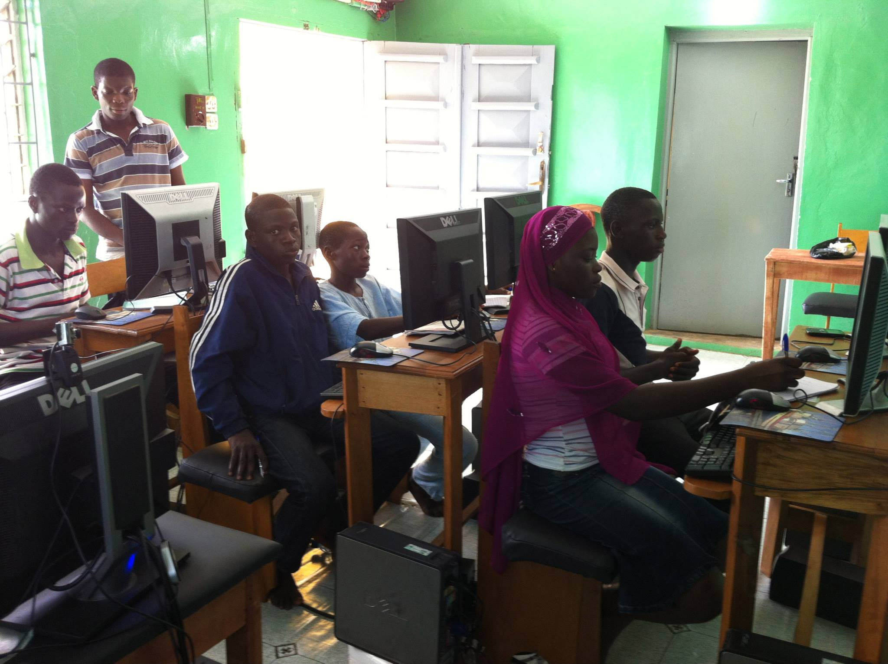

Bimbo Oluwasanmi Foundation
Functional Training, Employability, Vocational SKills
We Teach, Train & Add Social Values to participants life
EMPOWERING THE COMMUNITY ONE COMMUNITY AT TIME
Building the economy of the nation starts with communities within the Nation
Teach the basic literacy (Reading, Writing and Arithmetic 3Rs) and ITC in order to enhance more effectiveness of their skills acquisition.
To train women, men and young adults in vocational skills of their choice with a view to empowering them to either engage in trade and or are gainfully employed.
To add social value to the lives of participants, by providing them with skills, support and confidence, in so doing enable them to secure employment and remove the stigma of joblessness.

The Center
Conducive environment is a major tools in learning and enhances focus while undergoing training and learning

Teaching
The begining of everything in human life and the economy at large starts with the basic literacy which hinges on Reading, Writing and Arithmetics

Training
Just like the chinese proverb: Tell me and I'll forget; show me and I may remember; involve me and I'll understand. Hence, the need for our Hands-On model in the training

Adding Values
Skill first enhance one self awareness and mental alertness, after which it add value to oneself, to the community then to the nation and finally to the global environment
Onala Literacy Programme
The Organisation aims to address social and economic issues of the community in which we engage
in. We will do this by offering teaching and learning services to members, in order to
develop/enhance their skills which aid in personal, employment, and everyday life.
The main services that will be provided are certified training in Functional, Employability and
vocational skills, as well as Health and Social Care Training. This would be provided to
refugees/migrants, adults, youths and out of school members of the community.
Meet the Management

Nonye Agwunobi
As a former Stem Ambassador created awareness on STEM career choice as a highly rewarding career path amongst high school students
Pragmatic Mechatronics Engineer with proven experience of over 5 years in delivering high tech
projects. Driven and highly organised team leader with a passion for continuous improvement and continuous learning. Strong desire for a challenging hand on system engineering in emerging technology. Excellent interpersonal skills and ability to handle pressure in a fast pace environment. Thrives as a change catalyst in STEM and Youth Empowerment.
Abimbola Oluwasanmi
A compassionate, proactive, initiator; with knowledge and experience in HR and training, customer service, health and safety, food safety and Hygiene.
Abimbola is a microbiologist graduate and a teacher with specialism in ESOL, Specific Learning Difficulties SpLD, and Functional Skills (Literacy and Numeracy)
Shehu Olatunji Abimbola
Associate Professor in the Department of Fisheries, Lagos State University.
Holds a B. Agric Tech (FUT, Akure), a MSc. (LASU), an MBA (LAUTECH) and a PhD (LASU) in 2007.
Shehu works in the areas of fish ecology, fish as food, and fisheries governance which has been
ublished in many local and international journals and I've won numerous academic fellowships and grants. I am a member of several academic societies.